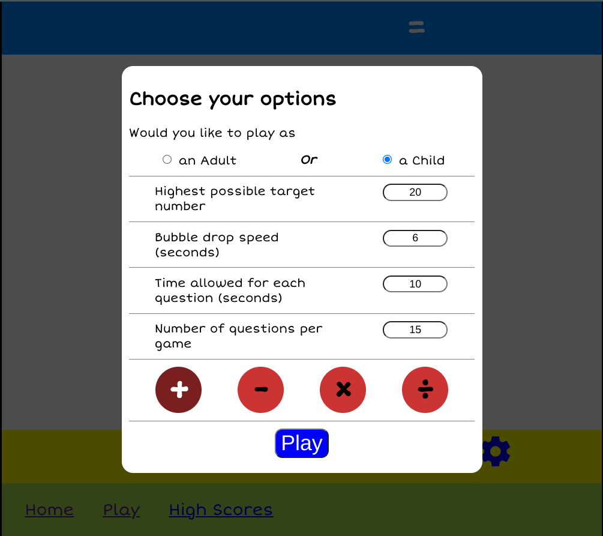
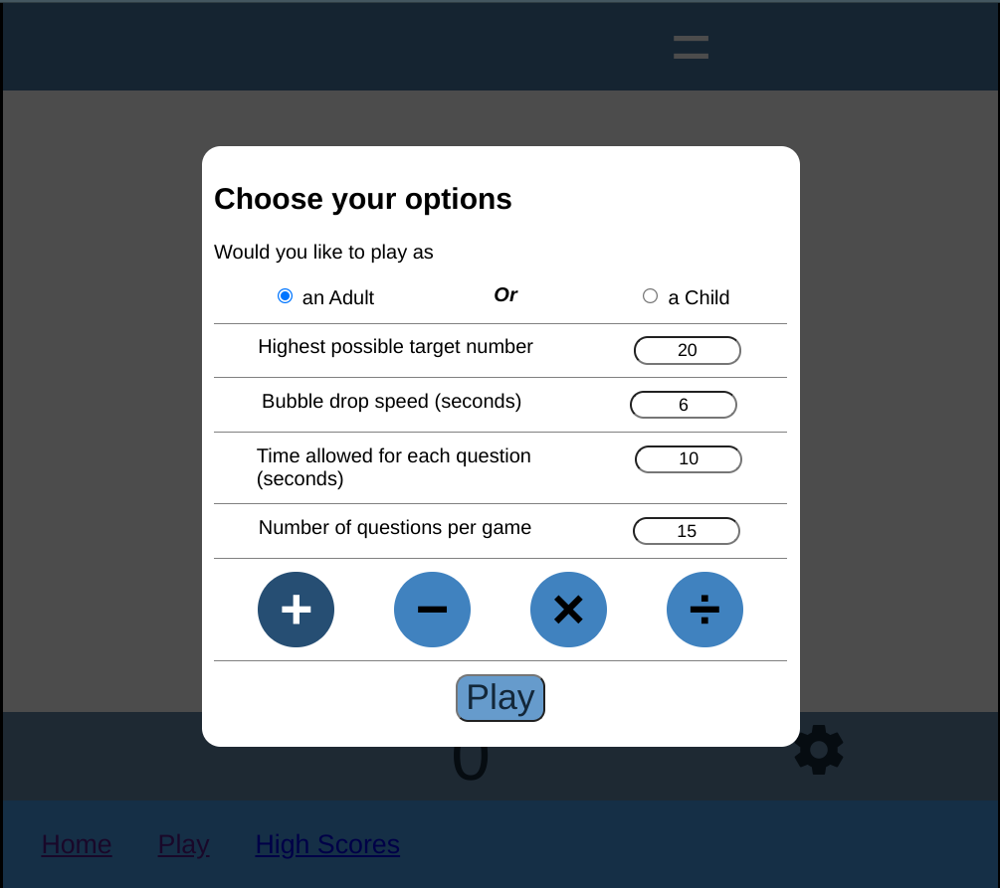

A fun and interactive game where you have to click on falling bubbles to reach the correct answer.
Play Now Fully customisable so you can make the game as challenging or easy as you like. By changing the speed bubbles fall, the maximum target number, the number of questions per game and how long you have to answer each question you can vary the game to your requirements.
This customisation is great for parents that want a fun game that is also educational. The settings can be changed for whatever level your child is studying and the calculation type, addition, subtraction, multiplication or division can be chose for each game.
The game isn't just for children either. With the level of customisation available it can be made more challenging for adults wanting to keep up their mental arithmatic skills and there is an adult theme for the game if you find the colours and fonts not boring enough.
To get started simply click the play link at the bottom of the page, choose yor options and click Play